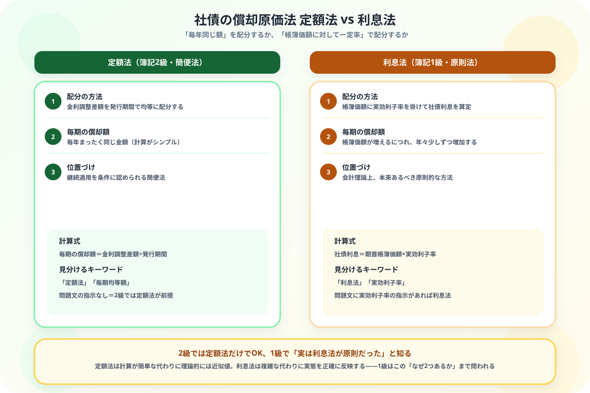

社債の定額法と利息法の違いがわからない人へ
2級の先にある「原則法」を図解で整理
この記事でわかること（5秒まとめ）
- どちらも社債の償却原価法——金利調整差額を配分する方法
- 本質の違いは配分の仕方——定額法は「毎年同じ額」、利息法は「帳簿価額に対して一定率」
- 簿記2級は定額法のみ——利息法は簿記1級で初めて登場する
- 会計理論上は利息法が原則、定額法は継続適用を条件に認められる簡便法
大谷 一輝 より
こんにちは、大谷です！
2級で社債の償却原価法を勉強したとき、「毎年同じ額を配分するだけ」というシンプルさに安心していたのですが、1級のテキストを開いたら「利息法（原則）」という文字が目に飛び込んできて、「え、2級で覚えたのは何だったんだ……簡単バージョンだったの？」と軽くショックを受けました（笑）。
実際その通りで、2級の定額法は簡便法、1級で習う利息法こそが理論上の本来の姿でした。でも仕組みは実はシンプルです。「毎年同じ額か、帳簿価額に対する一定率か」——この1点さえ押さえれば、計算はすぐに追いつけます。今日は一緒に整理していきましょう！
また、記事の末尾のほうにある【いいねボタン】をポチッと押してもらえると、めちゃくちゃ嬉しいです！
受験生
2級で社債の償却原価法は「毎年同じ額を配分するだけ」と覚えたのですが、1級のテキストに「利息法」という見慣れない言葉が出てきて混乱しています……。
大谷（簿記1級勉強中）
その感覚、僕もまったく同じでした！2級で覚えたのは「定額法」という簡便法です。1級で登場する「利息法」は、帳簿価額に実効利子率という一定の利率を掛けて社債利息を計算する方法。定額法のように毎年同じ額にはならず、帳簿価額が増えるにつれて償却額も少しずつ増えていきます。
受験生
毎年同じ額じゃなくなるんですね。じゃあ2級で習った定額法は、間違いだったんですか？
大谷（簿記1級勉強中）
間違いではないので安心してください。会計理論上は利息法が「本来あるべき原則」ですが、計算がシンプルな定額法も「継続して使うなら」という条件つきで正式に認められています。2級では簡便法である定額法だけを学び、1級でその背景にある原則法（利息法）まで踏み込む、という段階的な構成になっているんです。
❓ 配分の仕方の違い——「毎年同じ額」か「帳簿価額に対する一定率」か
定額法と利息法は、どちらも社債の償却原価法——金利調整差額を発行期間にわたって配分する方法です。違いは、その配分の計算方法にあります。
毎年同じ額を配分
定額法（ていがくほう）
→ 金利調整差額 ÷ 発行期間
計算がシンプルな簡便法。簿記2級ではこの方法のみを学ぶ。
帳簿価額に対する一定率
利息法（りそくほう）
→ 帳簿価額 × 実効利子率
会計理論上の原則法。簿記1級で登場し、償却額が年々変化する。

📝 ① 定額法の計算——2級で習う「毎年同じ額」
例題
額面100,000円、発行価額94,000円、償還期間5年の社債を発行した。定額法で償却原価法を適用する。
毎期の償却額 ＝（100,000－94,000）÷ 5年 ＝ 1,200円
| タイミング | 借方 | 金額 | 貸方 | 金額 |
|---|---|---|---|---|
| 毎期の決算整理（5年間、毎回同じ） | 社債利息 | 1,200 | 社債 | 1,200 |
ポイント：差額20,000円を5年で割るだけなので、5年間ずっと同じ1,200円を計上します。計算の手間が少ないのが最大のメリットです。
💰 ② 利息法の計算——1級で登場する「帳簿価額に対する一定率」
例題
同じ社債（額面100,000円、発行価額94,000円、クーポン利率年2%＝現金利払い2,000円/年）を、実効利子率年4%で利息法により処理する。
社債利息 ＝ 期首帳簿価額 × 実効利子率
1年目：94,000円 × 4% ＝ 3,760円
1年目：94,000円 × 4% ＝ 3,760円
| タイミング | 借方 | 金額 | 貸方 | 金額 |
|---|---|---|---|---|
| 1年目の利払い・償却 | 社債利息 | 3,760 | 現金 | 2,000 |
| 社債 | 1,760 |
ポイント：現金で支払うクーポン利息2,000円と、帳簿上の社債利息3,760円との差額1,760円が、社債の帳簿価額に上乗せされます。2年目は帳簿価額が94,000円→95,760円に増えているため、社債利息も95,760円×4%＝3,830円と、1年目より増加します。定額法のように毎年同じ額にはなりません。
🔍 ③ 出題範囲の違い——見分け方はシンプル
| 方法 | 出題範囲 | 位置づけ |
|---|---|---|
| 定額法 | 簿記2級・1級 | 簡便法（継続適用が条件） |
| 利息法 | 簿記1級のみ | 原則法（会計理論上、本来あるべき方法） |
2級受験生へ：2級の範囲では利息法は出題されません。定額法だけを確実に押さえれば十分です。「社債は2級で出ない」という検索が多いのは、この範囲の境界線への不安からくるものと思われますが、社債そのものは2級の正式な出題範囲です（定額法のみ）。
📋 まとめ：定額法 vs 利息法 早見表
配分の方法定額法＝均等配分／利息法＝帳簿価額×実効利子率
毎期の償却額定額法＝毎年同じ／利息法＝年々増加
出題範囲定額法＝2級・1級／利息法＝1級のみ
会計理論上の位置づけ利息法が原則、定額法は簡便法
🧭
「毎年同じ額か、帳簿価額に対する一定率か」——この1点で定額法と利息法はもう混同しません
2級で覚えた定額法は簡便法、1級の利息法はその先にある原則法でした。この記事が「あ、そういうことか！」につながったら、僕の執筆のモチベーション維持のために、この下にある【いいねボタン】をポチッと押してもらえると、めちゃくちゃ嬉しいです！
Study Questで今日の学習時間を記録して、簿記1級合格への一歩を刻んでおきましょう。